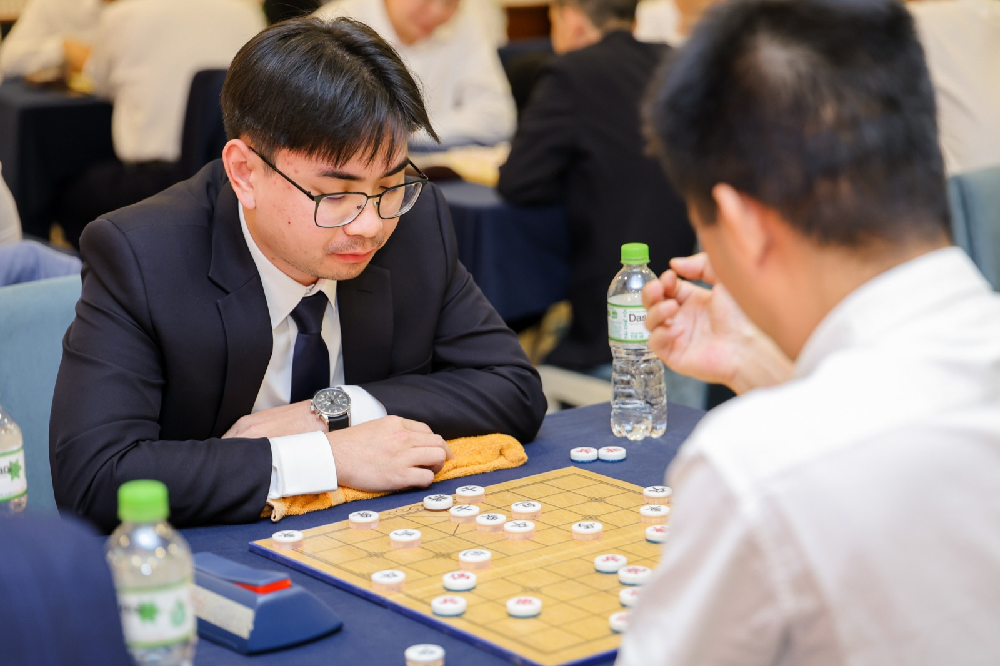

Hobbies
Second Prize, Vin33 Chinese Chess Tournament
August 2026
I played recreationally starting around 10, then competitively for a couple of years around 12–13 before stopping once high school started. Vin33 was Vingroup-wide, something like 60 people, and it ran as a five-round Swiss-style event rather than a full round robin, so I never played everyone in the room.
We started at noon. First match I won cleanly. Second match I tied, which is still the one that bothers me a little: I was down on time and, rather than risk losing on the clock, I offered a draw instead of pushing for the win. Won the next three after that. Second prize overall, which I'm happy with, though I keep replaying that second match and wondering if I should have just played it out.